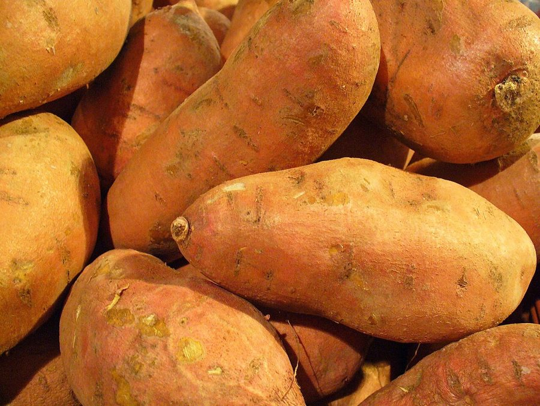

शकरकंदSweet Potato
Ipomoea batatas · Convolvulaceae · FLR-0396

- Scientific name वैज्ञानिक नाम
- Ipomoea batatas (L.) Lam.
- Family कुल
- Convolvulaceae
- Hindi हिंदी
- शकरकंद
- Local names स्थानीय नाम
- shakarkand, meetha aloo, sweet potato
- Status here यहाँ की स्थिति
- cultivated
- Movement आवागमन
- Resident, here all year
- Known from कहाँ दर्ज
- Others have published records from the Basti–Ayodhya districts बस्ती–अयोध्या के ज़िलों से दूसरों के प्रकाशित अभिलेख
- IUCN IUCN
- DD
- Review समीक्षा
- not yet reviewed
When to look कब देखें
Present all year. साल भर मौजूद।
Uses and possibilities उपयोग और संभावनाएँ
“Traditional medicine” means a documented traditional use, not a claim that it works. Nothing on this page is medical advice.
Drawn from the documented uses in the profile below, where each is labelled traditional, current or a research lead. All uses →
शकरकंद / Sweet Potato
Ipomoea batatas (L.) Lam. — Convolvulaceae
शकरकंद — अवध और पूर्वांचल के दियारा और बलुई दोमट कछारों में उगाई जाने वाली एक प्रमुख कंद वाली फसल है। इसकी जमीन पर रेंगने वाली बेलें, दिल के आकार के या कटे हुए पत्ते और मिट्टी के नीचे मीठे, स्टार्च से भरपूर कंद बनते हैं जो व्रत और त्योहारों में विशेष रूप से खाए जाते हैं।
Quick Identification त्वरित पहचान
| Feature | Description |
|---|---|
| Habit | Perennial trailing or creeping vine with milky latex, cultivated as an annual |
| Stem | Prostrate, cylindrical, green or purplish, rooting readily at the nodes |
| Foliage | Alternate, extremely variable; cordate, ovate, or palmately three- to five-lobed |
| Storage Organ | Swollen, adventitious root tubers; skin red, purple, or white; flesh white to orange |
| Flowers | Axillary, solitary or cymose; funnelform corolla, pale lavender or pink with deep purple throat |
| Fruit | Small, ovoid, four-valved capsule, rarely formed under northern Indian conditions |
Field tip: Look for lush, green or purplish, creeping vines carpeting agricultural ridges and riverbed terraces, forming dense mats of variable cordate or lobed leaves. Scraping the stem yields a drop of milky white sap. Digging gently into the ridge beneath rooting nodes reveals the spindle-shaped, reddish or pale subterranean tubers.
हिंदी:
इसकी बेल जमीन पर जाल की तरह फैलती है और हर गांठ से जड़ें निकलती हैं।
इसके पत्ते दिल के आकार के या पंजे जैसे कटे होते हैं और तोड़ने पर दूधिया रस निकलता है।
जमीन के नीचे लाल, बैंगनी या सफेद रंग के मीठे, गूदेदार कंद बैठते हैं।
Morphology आकारिकी
Measurement not available in consulted sources. Sweet potato is a perennial herbaceous vine cultivated primarily as an annual for its edible tuberous roots. The plant produces a vigorous, prostrate or ascending vegetative system. The stems (vines) are trailing, creeping along the soil surface, green, purplish, or reddish-tinged, cylindrical, striate, glabrous or sparsely pilose, and contain milky latex; they root profusely at the nodes wherever they make contact with moist soil.
The leaves are alternate, petiolate, and display remarkable morphological plasticity across cultivars and growth stages. Petioles are long, slender, cylindrical, and grooved above. Leaf blades range from broadly ovate or cordate with entire margins to deeply palmately lobed with three to five pointed or rounded lobes. The leaf base is cordate or truncate, the apex acute or acuminate, and the surfaces are glabrous or puberulous, dark green above and somewhat paler beneath.
The storage organs are modified adventitious storage roots that develop through secondary cambial thickening of nodal roots. The root tubers are fusiform, oblong, or elliptical, tapering toward both ends. The skin varies from smooth to cracked or furrowed, exhibiting shades of coppery red, reddish-purple, brownish-yellow, or creamy white. The interior storage parenchyma is firm, juicy, and ranges from pure white and creamy yellow to deep orange or purple.
Flowering is infrequent or sparse in many cultivated clones under northern Indian plains conditions, but occurs during the shortening days of late autumn. The inflorescence consists of solitary or few-flowered axillary cymes borne on stout, erect peduncles. The calyx consists of five unequal, oblong or lanceolate, mucronate sepals, the outer ones shorter and more rigid. The corolla is sympetalous, funnelform or campanulate, pale pink, lavender, or creamy white, with a rich, dark magenta-purple throat. Stamens are five, included within the corolla tube. The ovary is superior, bicarpellary and four-locular, surmounted by a single style with a capitate, two-lobed stigma. The fruit is an ovoid, glabrous capsule containing one to four hard, dark brown seeds, though sexual seed formation is rare.
हिंदी: इसकी बेल जमीन पर रेंगती है और गांठों से जड़ें फूटती हैं। पत्ते दिल जैसे या पंजेदार होते हैं और जमीन के नीचे लाल या सफेद कंद बनते हैं।
Behaviour & Ecology व्यवहार एवं पारिस्थितिकी
Ipomoea batatas is a tropical and subtropical geophyte adapted to warm, sunny climates with well-distributed rainfall during vegetative establishment and drier conditions during tuber maturation. The plant exhibits a prostrate trailing habit that forms a dense, living blanket over the ground, effectively intercepting sunlight, suppressing weed germination, and protecting loose sandy soils from wind and water erosion along riverine tracts.
Floral induction is strongly governed by short photoperiods, with flower buds developing as day lengths decline in October and November. When blossoms open in early morning, they produce nectar at the base of the ovary, attracting diurnal pollinators such as honeybees, bumblebees, and hawk moths. However, many commercial cultivars exhibit self-incompatibility and complex hexaploid genetics, leading to low sexual fertility.
In the soil, the extensive root network improves soil aggregation through the exudation of mucilaginous compounds. The plant maintains active mycorrhizal associations with arbuscular mycorrhizal fungi (AMF), which assist in scavenging phosphorus and micronutrients from alluvial sands.
हिंदी: यह जमीन को हरी चादर की तरह ढंककर मिट्टी का कटाव रोकती है और खरपतवारों को दबाती है।
Cultivation Calendar खेती का कैलेंडर
Duthie & Fuller (1893, Part III, p. 12) record under Ipomaea Batatas (vern. Shakarkand) that near Saharanpur the red-rooted kind is grown in sandy soil by the Jumna, the root cuttings planted out in August and the tubers ready by the end of November or early in December. In other parts the tubers are planted earlier and the crop is dug in October. Being dug early, it can be followed by a crop of chena or a vegetable.
हिंदी: डथी एवं फुलर (1893, भाग 3, पृ. 12) के अनुसार, बलुई मिट्टी में अगस्त में कलम लगाई जाती है और नवंबर के अंत या दिसंबर की शुरुआत तक कंद तैयार हो जाते हैं; जल्दी खुदाई के बाद चेना या सब्जी उगाई जा सकती है।
Life Cycle / Phenology जीवन चक्र एवं ऋतुचक्र
Following vine planting, adventitious roots initiate rapidly from buried nodes within a few days under warm monsoon conditions. New shoot growth commences within a week, and the vines elongate rapidly, branching and establishing a complete ground canopy within a month or two.
Tuber bulbing begins approximately a month after planting, initiated by the activation of an anomalous secondary cambium in young adventitious roots. Deposition of starch swells the roots throughout September, October, and November.
In late autumn, shortening photoperiods induce sporadic flowering on mature vines. Flowering peaks in November and December before temperatures drop sharply. As winter cold sets in during December and January, vegetative vine growth ceases, and the leaves may turn bronze or yellow, signaling optimal harvest maturity. If left unharvested, the above-ground vines die back during severe cold, but underground tubers remain dormant, capable of resprouting with the return of spring warmth.
हिंदी: लताओं से कुछ ही दिनों में जड़ें निकल आती हैं। बरसात में बेल फैलती है और शरद ऋतु में कंद फूलकर तैयार होते हैं।
Associated Species / Interactions सहजीवी प्रजातियाँ एवं पारिस्थितिक संबंध
Sweet potato fields provide habitat and food for insects. The foliage is a food plant for caterpillars of hawkmoths, which feed on the leaves. The dense leafy ground cover provides daytime shelter for ground beetles, toads, and soil-nesting insects.
हिंदी: इसके पत्तों को हॉक मॉथ की सुंडी खाती है।
Pests and Diseases कीट और रोग
Insect pests of sweet potato include weevils whose grubs tunnel through the storage roots, making them unpalatable. Stink bugs occasionally pierce and feed on succulent vine tips.
Fungal diseases include stem and tuber rots caused by soil fungi, which cause vine yellowing and decay of tubers in poorly drained soils. Black rot causes dark sunken spots on the tubers. Cultural management includes earthing up soil around ridge bases to prevent tubers from becoming exposed, crop rotation, and harvesting at maturity.
हिंदी: घुन कंदों में छेद कर देते हैं जिससे वे खराब हो जाते हैं। मिट्टी चढ़ाने और स्वस्थ लताओं से बचाव होता है।
Agricultural / Human Relevance कृषि एवं मानव प्रासंगिकता
Sweet potato is a traditional food tuber in Uttar Pradesh. Duthie & Fuller (1893, Part III, p. 12) note that it is eaten by all classes, either roasted or fried by itself, or cooked in curries, its flour being sometimes made into cakes (puri) or sweetmeats (gulgola). They also record that young leaves and tender shoots are eaten like spinach, and the foliage is considered excellent cattle food. Chopra et al. (1956, p. 141) record the root as laxative. In rural and urban areas, sweet potato is popular during religious fasting periods (such as Navratri and Shivratri), where grains are avoided. This is a record of published traditional use, not medical advice.
हिंदी: डथी एवं फुलर (1893) के अनुसार शकरकंद भूनकर, तलकर या तरकारी में खाया जाता है, और इसके पत्तों का साग भी बनता है। लताएं मवेशियों के चारे के काम आती हैं।
Expected Locally स्थानीय रूप से अपेक्षित
Not a field record. Written from published accounts for eastern Uttar Pradesh. No confirmed local sighting yet — if you have seen it, that is what the atlas needs.
अभी तक स्थानीय पुष्टि नहीं। यह विवरण प्रकाशित स्रोतों से है, किसी अवलोकन से नहीं।
Look in alluvial sandy loam soils, riverbed silt terraces, and vegetable plots across eastern Uttar Pradesh. It should be looked for during the autumn and early winter months along the floodplains of the Ghaghra and Rapti rivers and at rural weekly markets during peak winter harvest.
GBIF holds published records from these districts.
A first record would be a photograph of the flowering plant or harvest with place and date, sent through the About page.
Distribution वितरण
Ipomoea batatas is cultivated throughout tropical, subtropical, and warm temperate regions worldwide. The species originated in the Neotropics (Central and South America), where wild diploid and polyploid progenitors have been identified. It was domesticated in antiquity in the Neotropics and introduced into the Pacific, Asia, and Europe in post-Columbian trade. It has been grown in the Indian subcontinent for several centuries, becoming thoroughly naturalized in agricultural cycles. Duthie & Fuller (1893, Part III, p. 12) record it as extensively grown in the Farukhabad district.
हिंदी: यह मूल रूप से उष्णकटिबंधीय अमेरिका का पौधा है, जो भारत और उत्तर प्रदेश के कछारों में खूब उगाया जाता है।
Research Questions शोध प्रश्न
- What is the distribution and infestation severity of weevils in diara farming belts of eastern Uttar Pradesh? / पूर्वी उत्तर प्रदेश के कछारी इलाकों में घुन (वीविल) का कितना प्रकोप है?
- How do traditional local white-fleshed landraces compare with biofortified orange-fleshed cultivars in yield and consumer preference in the Awadh region? / अवध के क्षेत्र में सफेद गूदे वाली देशी किस्मों और नारंगी गूदे वाली नई किस्मों की पैदावार और स्वाद में क्या अंतर है?
- Can sweet potato cover cropping suppress weed biomass and enhance soil organic matter retention in sugarcane and cereal rotations? / क्या गन्ने या अनाज की फसलों के साथ शकरकंद लगाने से खरपतवार दबते हैं और मिट्टी की उर्वरता बढ़ती है?
- What are the primary arbuscular mycorrhizal fungal communities associated with sweet potato roots in Gangetic sandy silt deposits?
- How does earthing-up frequency affect tuber initiation depth and weevil infestation?
हिंदी: कछारी इलाकों में वीविल कीट की रोकथाम और नारंगी किस्मों के प्रसार पर और शोध आवश्यक है।
Similar Species मिलती-जुलती प्रजातियाँ
Sweet potato (Ipomoea batatas) is easily distinguished by its creeping habit and swollen storage tubers, but its vegetative foliage and flowers can resemble other morning glory vines. Bush morning glory (Ipomoea carnea subsp. fistulosa, FLR-0024) is an erect or scrambling woody shrub with hollow stems, lanceolate leaves, and no underground tubers, growing wild along roadsides and waterlogged ditches. Water spinach (Ipomoea aquatica, FLR-0030) is an aquatic or semi-aquatic floating herb with hollow, rooting stems and arrow-shaped leaves that grows in stagnant wetlands rather than terrestrial cultivated ridges. Yam (Dioscorea alata), which also produces large starchy tubers, is a twining monocot vine with winged stems and heart-shaped leaves bearing opposite venation and aerial bulbils.
| Feature / Trait | Sweet [[potato\ | Potato]] (Ipomoea batatas) | Bush Morning Glory (Ipomoea carnea, FLR-0024) | Water Spinach (Ipomoea aquatica, FLR-0030) |
|---|---|---|---|---|
| Growth Habit | Creeping prostrate vine; roots at nodes | Stout, erect to sprawling woody shrub | Floating or creeping aquatic herb | |
| Underground Organ | Swollen, succulent storage root tubers | Fibrous woody roots; no tubers | Fibrous roots emerging at wet nodes | |
| Habitat | Cultivated well-drained sandy ridges | Waste ground, ditches, wetlands | Ponds, marshes, water margins | |
| Stem Structure | Solid, cylindrical vine with milky sap | Stout, hollow, fistular woody stems | Hollow, spongy, buoyant green stems | |
| Primary Use | Major food tuber and green fodder | Living hedge; toxic to livestock | Leafy green vegetable (kalmi saag) |
Field rule: Sweet potato (Ipomoea batatas) is recognized by its trailing prostrate vines with milky sap, variable cordate or lobed leaves, and subterranean storage tubers, whereas bush morning glory is an erect shrub and water spinach is aquatic.
हिंदी: बेशरम की झाड़ी सीधी खड़ी होती है और नारी साग पानी में तैरता है, जबकि शकरकंद जमीन पर रेंगता है और कंद बनाता है।
Taxonomy & Classification वर्गीकरण एवं नामकरण
Ipomoea batatas was published by Jean-Baptiste Lamarck in 1793 in Tableau Encyclopédique et Méthodique. The species was originally designated Convolvulus batatas by Carl Linnaeus in 1753. The genus Ipomoea is the largest genus in the morning glory family (Convolvulaceae). Cultivated sweet potato is a hexaploid domesticate derived from hybridization events involving wild ancestors related to Ipomoea trifida. In older Indian botanical treatises, including J. D. Hooker's Flora of British India and J. F. Duthie's Flora of the Upper Gangetic Plain, the plant is described as extensively cultivated for its sweet, edible tuberous roots.
Original description. Ipomoea batatas was published by Jean-Baptiste Lamarck in 1793 in Tableau Encyclopédique et Méthodique (vol. 1, p. 465), based on Convolvulus batatas L. (1753).
Subspecies. Sweet potato is a complex hexaploid cultigen; numerous landraces exist with white, cream, orange, or purple tuber flesh.
Family and order placement. The genus Ipomoea belongs to the family Convolvulaceae, order Solanales.
IUCN status rationale. Ipomoea batatas is categorized as Data Deficient (DD) on the IUCN Red List due to unresolved taxonomic boundaries among its wild Neotropical polyploid progenitors.
हिंदी: लैमार्क ने 1793 में इसका नामकरण किया था। यह कॉन्वॉल्वुलेसी (लटजीरा-मॉर्निंग ग्लोरी कुल) का सदस्य है।
Photo Gallery फोटो गैलरी
No photos yet. Images documenting this species from eastern Uttar Pradesh will be added following verification.
References संदर्भ
- Lamarck, J.-B. (1793). Tableau Encyclopédique et Méthodique des trois règnes de la nature. Botanique, vol. 1, p. 465. Panckoucke, Paris.
- Duthie, J. F. & Fuller, J. B. (1893). Field and Garden Crops of the North-Western Provinces and Oudh. Part 3. Roorkee: Thomason Civil Engineering College Press, p. 12 (as Ipomaea Batatas).
- Linnaeus, C. (1753). Species Plantarum, vol. 1, p. 154. Laurentii Salvii, Holmiae.
- Clarke, C. B. (1883). Convolvulaceae. In J. D. Hooker (ed.), The Flora of British India, vol. 4, p. 202. L. Reeve & Co., London.
- Duthie, J. F. (1911). Flora of the Upper Gangetic Plain and of the Adjacent Siwalik and Sub-Himalayan Tracts, vol. 2, p. 117. Office of the Superintendent of Government Printing, Calcutta.
- Rowe, J., Wood, J., Scotland, R. & Muñoz-Rodríguez, P. (2019). Ipomoea batatas. The IUCN Red List of Threatened Species 2019: e.T71775024A71775029. doi:10.2305/IUCN.UK.2019-2.RLTS.T71775024A71775029.en
- GBIF Occurrence Data — Ipomoea batatas, India (2025).
- Chopra, R. N., Nayar, S. L. & Chopra, I. C. (1956). Glossary of Indian Medicinal Plants. New Delhi: Council of Scientific & Industrial Research, p. 141.
Source file: species/flora/crops/sweet_potato.md